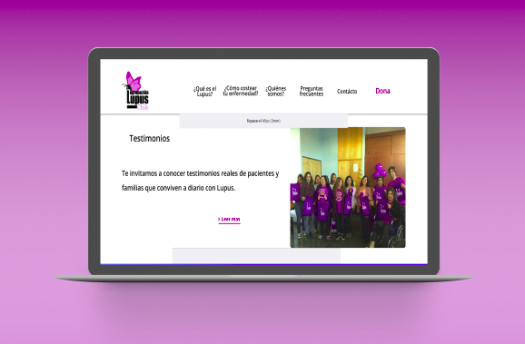
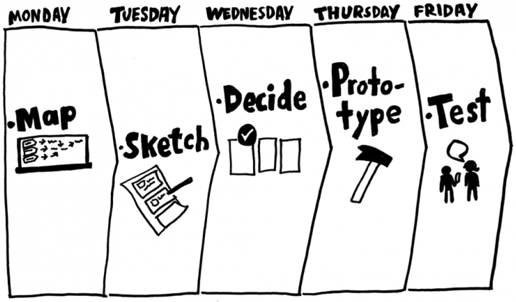
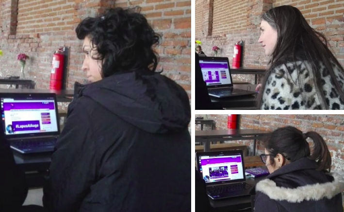

Desafío Epistemonikos
Fundación sin fines de lucro que trabaja fomentando mejores prácticas de investigación y acerca este conocimiento al público general.

Contexto
Epistemonikos se une a Laboratoria para que equipos conformados por front-end y UX designer ayuden a las fundaciones y agrupaciones que trabajan bajo el alero de Epistemonikos, para realizar una propuesta de mejora a los sitios web de estas. Nosotras tuvimos el honor de trabajar con Agrupación Agrupación Lupus Chile.
Duración
Este proyecto se desarrolló durante la segunda quincena de Agosto y la primera de Septiembre, por lo que tuvo una duración de 2 semanas
El desafío
Determinar cuáles son las oportunidades de mejora que puede tener el sitio web y diseñar un sitio web en pos de estas.
Mi rol
Durante el desarrollo del desafío participe en las entrevistas con el cliente también realicé entrevistas a pacientes, familiares y expertos, hice el Benchmark y la evaluación heurística del sitio web de Emerid. Tambien participe en la actividad de testeo de contenido. Dentro del proceso de ideación participe de la realización de Card sorting, sketching y wireframe del sitio web
Planificación
Como este proyecto tenía un dead line de 2 semana y además teniamos que entregar esta propuesta a nuestras compañeras front-end, nos propusimos llevar a cabo el proceso de investigación, definición, ideación y prototipado como se propone en el libro "Design Sprint", que postula realizar todas estas actividades en solo 5 días. El resto del tiempo nos permitiría testear el diseño y documentar de mejor forma el proceso.

Aprendizajes del proceso investigativo
Para poder entender las demandas de la agrupación y de los diferentes usuarios que acuden a esta, tuvimos entrevista con el representante de agrupación Lupus, pacientes diagnosticados con esta enfermedad, familiares y expertos en el área. Estas actividades nos dieron una perspectiva más amplia de cómo abordar el desafío, además de conocer una enfermedad que si bien habíamos escuchado de ella, nunca la habíamos investigado.
Aprendimos que la agrupación cumple tres funciones fundamentales en la sociedad:
Educar sobre
la enfermedad, apoyar a pacientes y sus familiares en la lucha contra el
Lupus y representar
a los pacientes en la creación de nuevas leyes.
En entrevista con los usuarios,
entendimos
cuales son sus necesidades, que esperan encontrar en la web al buscar sobre la enfermedad,
cuáles son sus preocupaciones al momento de enfrentarse con la enfermedad.
Buscamos referentes, analizamos cómo es que estos sitios abordan la información, realizamos una evaluación heurística del sitio de la agrupación y observamos todas las oportunidades de mejora que esta podría tener
Por último testeamos la página web y les pedimos a los usuarios que busquen cierta
información
dentro de la página y que nos contaran su parecer.
Cómo es que se entregaba la
información en el
sitio, su fuente, el tamaño de esta y la repetición de botones dentro del sitio, fue unos de
los tópicos más nombramos por los usuarios testeados.

Definición e ideación de propuesta
Con toda la información recopilada realizamos un diagrama de afinidad, para definir hacia dónde apuntaría nuestra propuesta, esta actividad fue realizada en conjunto con todo el equipo tanto las front-end como las UX que lo componíamos.
Después de esta actividad, cada una aportó su insight, nos cuestionamos cómo podremos darle solución a las necesidades y cómo la tecnología nos podría ayudar en esto
Ya determinado el contenido de nuestra propuesta, era fundamental saber cómo los posibles usuarios buscan esta información y cómo querían que se entregará, por lo que realizamos dos actividades: Card sorting y testeo de contenido.
Con el Card sorting, logramos identificar dónde es que los usuarios buscan la información dentro de una página, que temas van juntos y cómo podríamos etiquetar a estos grupos.
Por otro lado, el testeo de contenido consistió en una actividad en la que le entregamos a los usuarios un texto y les pedimos que resalten con ciertos colores aquella información que es de fundamental importancia, aquella que es complementaria y por último aquella información que no era importante según ellos.
Prototipado

Con toda la información recopilada diseñamos un wireframe del sitio web, para finalmente
entregarles a las front-end el prototipo de alta fidelidad de la propuesta.
A
continuación,
te invito a interactuar con el wireframe que diseñe para este proyecto.
Si deseas leer el informe completo del trabajo que realizamos, lo puedes ver aquí